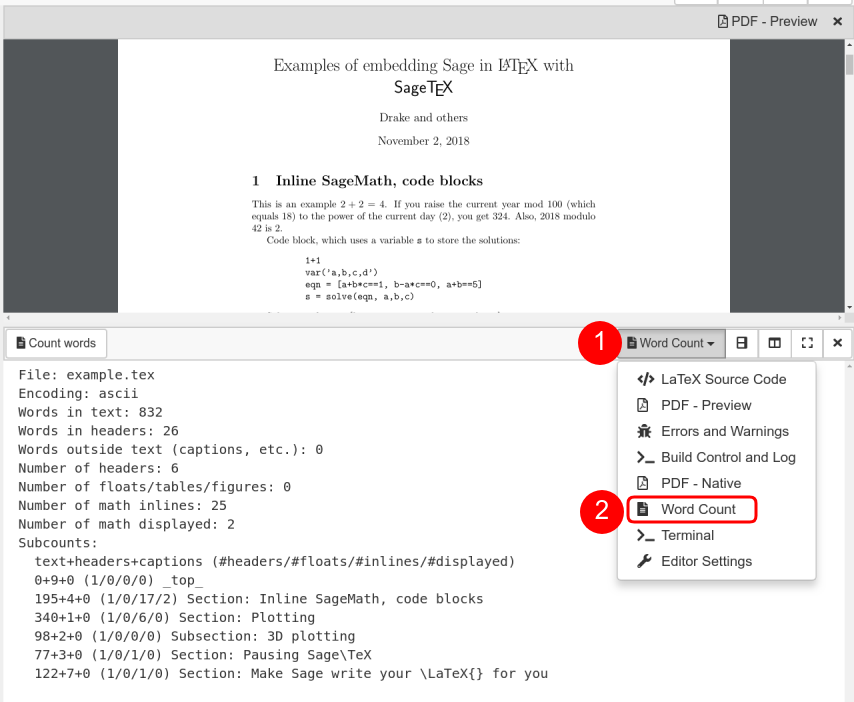
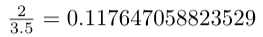
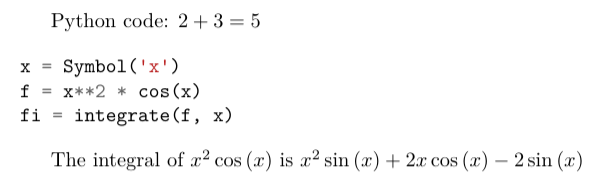
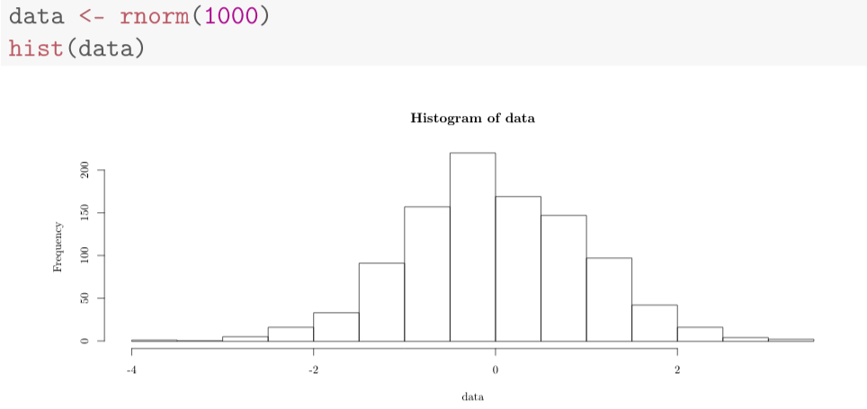
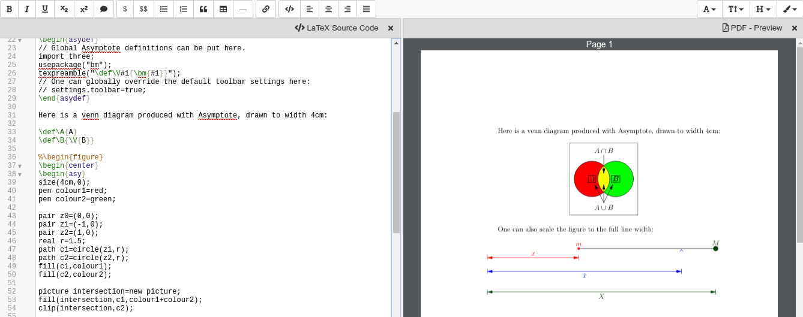

LaTeX Editor¶
[LaTeX] is a sophisticated markup language and processor for typesetting documents. For a general introduction, read this LaTeX wiki book or any other resource.
- Getting started
- Features
- FAQ
- How to insert an image?
- How to insert a backslash or dollar sign?
- What to do if the preview does not update
- How to deal with large documents across multiple source files?
- How to work with Knitr, SageTeX or PythonTeX?
- How to use PSTricks macros?
- Enable
shell-escapeto plot using Gnuplot - How can I draw via Asymptote?
- Setup
texmfin a project? - Is there a way to turn off automatic build and PDF preview while I’m working on sub documents?
- An error says that the PDF cannot be built. How can I find the problem?
- Spell check my LaTeX document
Getting started¶
To use the LaTeX editor, open or create a file whose name ends in .tex. By default, you should see an editor similar to the one in the screenshot below:

Building In general, you edit source code and compile it to a PDF document. Click the “Build” button (or hit shift+enter or alt+t) to build the tex file and produce a PDF. You can also check “Build on save: build LaTex file whenever it is saved to disk” in account preferences, and a build will be triggered whenever your file is saved to disk.
Interface In the initial screen layout, the source is on the left and a preview of the compiled PDF is on the right. Also, there are frames showing issues, warnings, errors, and the build log. You can close any of these panels by clicking the x in the upper right of the panel. You can also split them as much as you want, and change what is displayed in any panel. If you close all the panels, the default layout is restored.
- The PDF Preview shows the PDF document.
- You can easily position the preview by using the mouse to drag the preview around.
- There are buttons for zooming, and expanding to the vertical and horizontal height.
- There are also buttons for printing and downloading the PDF.
- Errors and Warnings
- The Errors and Warnings frame lists all compilation errors and warnings, and other issues. Click on the line number link to jump to the corresponding line in the input code on the left and the preview on the right. LaTeX may fail to compile (or only partially or in a wrong way) if there are many errors.
- The PDF - Native view (not shown by default) shows you an embedded view of the compiled PDF file, using your browsers native PDF view. This might be broken if your browser has problems rendering the file inline – use the “PDF Preview” view instead. Also, you can’t double click on the Native view to move back to jump to the corresponding tex.
- The Build Control view gives you more control over how the compilation process works:
- You can click in the build command line and edit it however you want, or select a different engine from the dropdown menu. By default, we compile using LatexMK, which manages temporary files and BibTeX.
- Click Clean to delete autogenerated temporary files.
LaTeX 101¶
It is very easy to start with LaTeX.
CoCalc guides your first document with a small default template.
You start working between the \begin{document} ... \end{document} instructions.
Everything before \begin{document} is called the “preamble” and contains the configuration for the document.
For example, remove the \maketitle instruction and replace it by
> Hello \textbf{CoCalc}! This is a formula: $\frac{1}{1+x^2}$.
After saving ([CTRL] + [s] or click the green Save button at upper left), the file will build, and
you should see an updated PDF preview.
- New paragraphs: Single returns for new lines do not have any effect. Use them to keep new sentences in paragraphs at the beginning of a line for better overview. Two or more returns introduce a new paragraph.
- Formulas: They’re either between
$or$$, or in\begin{equation}...\end{equation}environments.
You can also import your existing documents by uploading in “Files” or importing from ShareLatex/Overleaf.
Features¶
Forward & Inverse Search¶
Forward and inverse search are extremely helpful for navigating in a larger document.
Forward: place your cursor at a specific location in the editor on the left-hand side.
Click the “Forward” button or the [ALT] + [Return] keyboard shortcut to jump to the corresponding
location in the PDF preview.
(In rare cases where full positional information is not available, this feature may not be active.)
Inverse: Double-click on an area of interest in the PDF Preview area. The cursor in the text editor will jump to the paragraph in the source-code.
Spellcheck¶
Spell checking during LaTeX editing is available for several languages. You can enable/disable Spellcheck and change the language for a particular file by opening the Settings frame as shown:
Note that the Spellcheck feature is also available in Markdown and HTML editors.
Word count¶
CoCalc can show you current word count statistics generated by texcount. In order to see them, change one of the frames or created a new one in the Frame editor. Select “Word Count” as shown below:
LaTeX Engines¶
- latexmk + PDFlatex: the default configuration, works in most cases
- latexmk + XeLaTeX: this is useful for foreign languages with many special characters.
- latexmk + LuaTex: uses the LuaLaTeX engine.
Encoding¶
UTF8: the build process runs in a Linux environment. All edited documents are assumed to be encoded as UTF-8. Therefore, depending if you compile via PDFLaTeX or XeLaTeX, the following encoding defintions are the preferred choices:
PDFLaTeX:
\usepackage[T1]{fontenc} \usepackage[utf8]{inputenc} \usepackage{lmodern}
XeLaTeX or LuaTeX:
\usepackage{fontspec}
The default template already selects the correct configuration for you.
FAQ¶
How to insert an image?¶
- Upload a PNG or PDF file via CoCalc’s “Files” interface.
The uploaded image should be in the same directory as the
.texfile Otherwise, use relative paths like./images/filename.pngif it is in a subdirectoryimages. - Follow these instructions about how to insert a graphic in a figure environment.
Do not forget
\usepackage{graphicx}in the preamble declaration.
How to insert a backslash or dollar sign?¶
The \ character has a special meaning.
It signals a LaTeX command or is used as an escape character.
To enter a backslash, escape its meaning by entering it twice: \\.
A dollar sign is entered as \$, which escapes the meaning of “formula-start”.
What to do if the preview does not update¶
Possible reasons:
- Are there any errors in the “Issues” tab? LaTeX only compiles well if there are zero reported errors.
- Long documents could take an extended period of time to complete. In the “Preview” tab, disable the preview and only enable it once to avoid piling up too much work on the back-end.
- Similarly, computational-heavy “SageTeX” computations could lead to excessive compilation times. You can pre-compute results or split the document into smaller parts.
How to deal with large documents across multiple source files?¶
The best way is to use the subfiles package as described here.
There is an extended example demonstrating how this works in the CoCalc Library.
Click “Files” and open the Library. Then select Multiple source files in CoCalc in the LaTeX templates section.
The same example is also available at cloud-examples/latex/multiple-files.
To do this for your existing document,
let’s suppose your LaTeX project is composed of one master.tex file and several chapter-1.tex, chapter-2.tex, etc.
CoCalc’s LaTeX editor only knows about the currently opened file,
and using \import{} doesn’t work, because the chapter-*.tex parts are not proper documents.
The subfiles package does not only collect the partial documents into one,
but also extracts the preamble of the master.tex file for each chapter-*.tex in order to create valid subdocuments.
Following the subfiles documentation, do this:
\usepackage{subfiles}inmaster.tex\subfile{⟨subfile name ⟩}for each subfile inmaster.tex’sdocumentenvironment (i.e. instead of\includeor\import).For each
chapter-*.texsubfile:\documentclass[⟨master.tex file-name⟩]{subfiles} \begin{document} ⟨text, graphics, etc.⟩ \end{document}
After that, all *.tex files can be compiled and all other features like forward/inverse search work, too.
How to work with Knitr, SageTeX or PythonTeX?¶
CoCalc supports several ways to embedd code within a document. Such code is automatically processed and evaluated during generating the document and any output appears as part of the PDF output itself. In particular, you can insert small calculations and formulas (Sage, SymPy, …), Python code, R calculations, plots, data tables, etc. This is frequently used as part of reproducible research.
SageTeX¶
Any .tex file loading the sagetex package is automatically processed via [[SageMath]].
First, Sage code is extracted into a .sage file, then sage ... evaluates that file, and finally the LaTeX engine creates the PDF document by replacing all snippets of Sage code by their evaluated result.
CoCalc handles all details for you!
To get going, you just have to insert \usepackage{sagetex} into the preamble of your document.
Calculations are done like that: $\frac{2}{3.5} = \sage{n(2/17)}$, which results in .
See SageTeX documentation for more details and examples. There is also a SageTeX example in the CoCalc Library. Besides that, the SageMath Documentation could also be of help!
PythonTeX¶
PythonTeX follows the same spirit as SageTeX.
Embedded Python commands and blocks of code are extracted into a .py file,
Python 3 evaluates them,
and at the end the LaTeX engine merges the generated output snippets into the final document and renders the PDF file.
CoCalc handles all details for you!
To get going, insert \usepackage{pythontex} into the preamble of your document.
Then, you can insert inline code snippets via \py{} and blocks of code inside of \begin{pyblock} and \end{pyblock}.
There is also support for [SymPy] code via \sympy{} or plots via Pylab using \pylab{}.
For example, code like this:
Python code: $2+3 = \py{2+3}$
\begin{sympyblock}
x = Symbol('x')
f = x**2 * cos(x)
fi = integrate(f, x)
\end{sympyblock}
The integral of $\sympy{f}$ is $\sympy{fi.simplify()}$
produces:
You can read more in the PythonTeX Documentation. Also note, that sometimes it is necessary to run “Build” again to properly re-process all code snippets. There is also a PythonTeX example document in the CoCalc Library.
Knitr¶
Knitr LaTeX documents are different from SageTeX and PythonTeX.
They have their own filename extension (CoCalc supports .rnw and .Rtex) and instead of calling LaTeX commands of a package, they feature their own syntax for embedded blocks and statements.
Historically, at first Sweave was added to R,
but Knitr is a much more modern variant with more features
(see Transition from Sweave to Knitr).
In general, the compilation works by first processing the input file via Knitr,
which runs R and generates a .tex document.
Then, the Latex engine processes that .tex file as usual.
CoCalc handles all details for you.
To get started, create a file ending with .rnw (Rweave/Sweave syntax) or .Rtex (code is in comment blocks).
Both will initialize the file with a template explaining you how to work with it.
For example, a block like:
<<histogram-plot4, dev='tikz', fig.height=4, fig.width=10>>=
data <- rnorm(1000)
hist(data)
@
produces a plot of a histogram, drawn using TikZ.
Note, that latex-forward-inverse will work as well as reporting errors.
How to use PSTricks macros?¶
PSTricks is a set of macros for including PostScript drawings in a TeX document. The website has an extensive gallery of examples.
The main thing to remember when using PSTricks is to set Engine in the CoCalc Build panel to XeLaTeX as in this small demo .tex file and resulting .pdf.

Enable shell-escape to plot using Gnuplot¶
There are situations where the LaTeX document calls certain utilities to accomplish a task. One example is creating plots via Gnuplot right inside the document.
For example, a snippet of tex code could look like this:
\begin{figure}
\begin{tikzpicture}
\begin{axis}[ ... ]
\addplot [...] gnuplot [raw gnuplot] {plot [-0.015:0.015] cos(380*x);};
\end{axis}
\end{tikzpicture}
\end{figure}
In the middle, Gnuplot runs plot [-0.015:0.015] cos(380*x); to plot a cos function.
The problem is that by default the PDF LaTeX Engine doesn’t allow to run arbitrary commands due to security concerns. You’ll see an error like that:
Package pgfplots Error: Sorry, the gnuplot-result file 'gnuplot.pgf-plot.table'
could not be found.
Maybe you need to enable the shell-escape feature? [...]
Note
You have to select the PdfLaTeX (shell-escape) engine from the selector in the build panel or modify the build command maually.
As a result, Gnuplot will be run, the error vanishes, it creates the necessary temporary files for the PGF plot, and the PDF will show the plot.
You can download the example gnuplot.tex and see it in a screenshot below:
How can I draw via Asymptote?¶
Asymptote is a
powerful descriptive vector graphics language that provides a natural coordinate-based framework for technical drawing. Labels and equations are typeset with LaTeX, for high-quality PostScript output.
In order to tell LatexMK
– which CoCalc’s LaTeX editor is using by default under the hood –
to process the generated *.asy files,
you need to setup your ~/.latexmkrc file in your home directory.
In order to do that, open up the Files tab in your project
and click on the home-icon to make sure you’re in your home directory.
Then, click on Create to create a new file and enter the filename .latexmkrc.
Don’t overlook that leading dot in the filename, which is used for hidden files in Linux.
Then, enter these lines in the text editor and save the file:
sub asy {return system("asy \"$_[0]\"");}
add_cus_dep("asy","eps",0,"asy");
add_cus_dep("asy","pdf",0,"asy");
add_cus_dep("asy","tex",0,"asy");
These additional rules tell LatexMK to essentially run asy <basename>-*.asy
on each file during the build process.
In case there are problems, you can run that command-line in a Linux Terminal
to see all details about any possible errors.
More information: Asymptote LaTeX Usage.
Setup texmf in a project?¶
A CoCalc project is equivalent to a linux user account.
Therefore, the texmf discovery mechanism works the same as on a local machine.
By default, you should be able to put your own packages and styles into ~/texmf.
In case you just want to add a styles-file with common commands
for the tex processor available to all your .tex files,
you have to put them into the ~/texmf/tex/latex/local sub-directory.
That way they’re always found by the latex processor.
(see stackexchange discussion)
Otherwise, you might have to run run texhash ~/texmf in a terminal or the little “Terminal command” textbox in “Files”.
Note: the ~ stands for the HOME directory, which is the root directory you see in the “Files”-listing.
You can click the home icon to jump into the home directory.
texmf is a subdirectory right there.
Is there a way to turn off automatic build and PDF preview while I’m working on sub documents?¶
If you’re working on a main LaTeX document that has included tex files, you may want to turn off compilation of the individual subfiles. Here are some steps you can take:
- By default, building latex documents on saving is enabled. You can disable it under
Account→Preferences→Editor settingsby removing the check mark forBuild on save: build LaTex file whenever it is saved to disk. - You can also disable the build process by opening the “Build” dialog and entering
echoin the line where the command is. That just does nothing when it tries to build. - If you like, you could also structure your LaTeX in such a way that subdocuments also build via the CTAN subfiles package.
You can find an example in the CoCalc Library. In a project, click on
+ New, and in the middle you will find the Library. Look underLaTeX templates→Multiple source files in CoCalc.
In general, multifile LaTeX editing is on our radar, but we haven’t got to that yet: CoCalc issue #904.
An error says that the PDF cannot be built. How can I find the problem?¶
- Use TimeTravel to go back to a working version. In the TimeTravel view, you can use
Changesto see exactly what changed between revisions. - Another tip is to click the format button, since sometimes formatting properly can give you a good sense of what you might have messed up.
- More general, you can also use revision control like [Git] to track your changes. Just create a Terminal file or frame in the latex editor and go ahead and work on the command-line as usual.
- If you need more detailed help, make sure to open the
.texfile and make a support request by clicking theHelpbutton at the top right.
Spell check my LaTeX document¶
Whenever you save the LaTeX document, it will run a spell checker and underline the words that are not spelled correctly. By default, it uses the language you’ve set in your web browser.
You can change the autosave interval to be very short in account settings (under editor) if you need the spell checking to update frequently.
Seeing a list of alternative words (correct spellings) isn’t supported directly in the editor yet Issue #3461.
For now, a workaround is to run LaTeX-aware aspell, e.g.
- Open a Linux Terminal
aspell -t -c <filename.tex>
You can add words for aspell to ignore using personal dictionaries. These words won’t be underlined red. To do this create the file ~/.aspell.lang.pws, where lang is the choice of langauge. The first line of this file should be personal_ws-1.1 lang 0, where lang is the choice of language. Then add one word per line for aspell to ignore. For example, to ignore the words ‘bijection’ and ‘surjection’ in an English document, create the file ~/.aspell.en.pws with the content:
personal_ws-1.1 en 0
bijection
surjection
The changes will take place the next time aspell is run on the document. You may force this by clicking the build button.

{kind=link}
{kind=link}
{kind=link}
{kind=link}
{kind=link}
{kind=link}
{kind=link}
{kind=link}